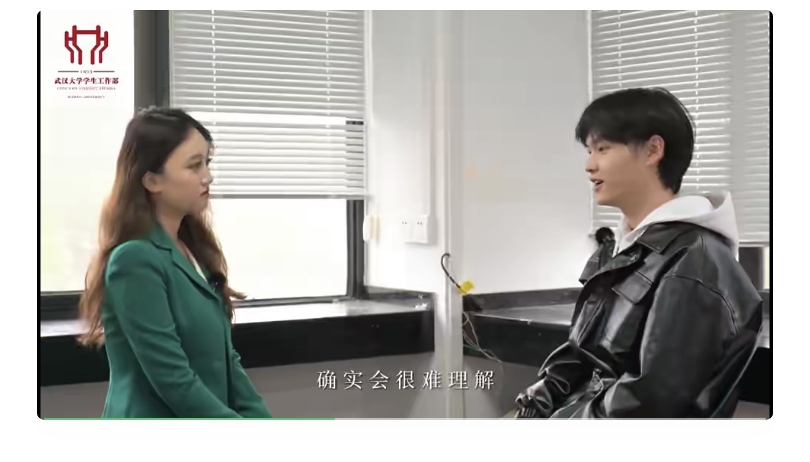
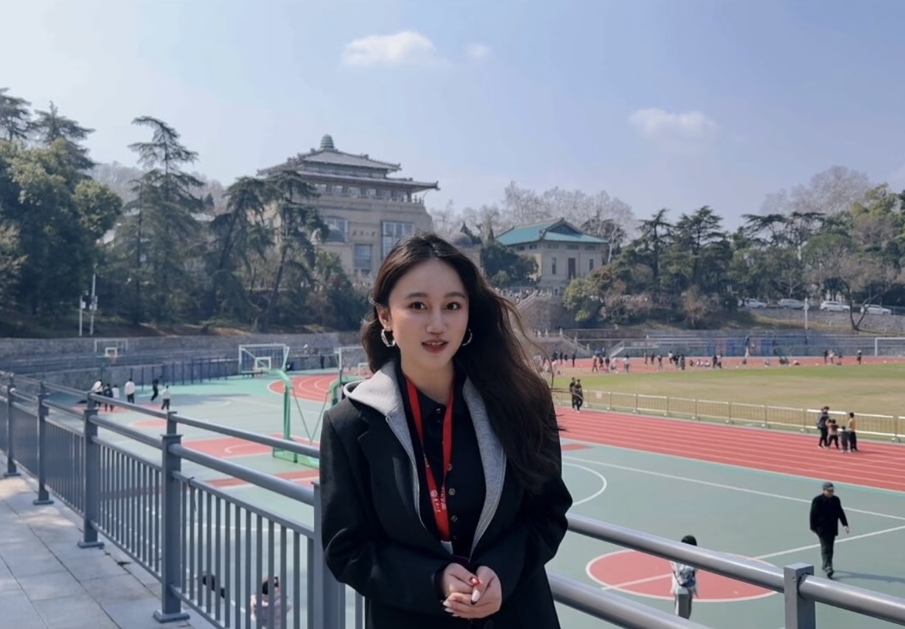
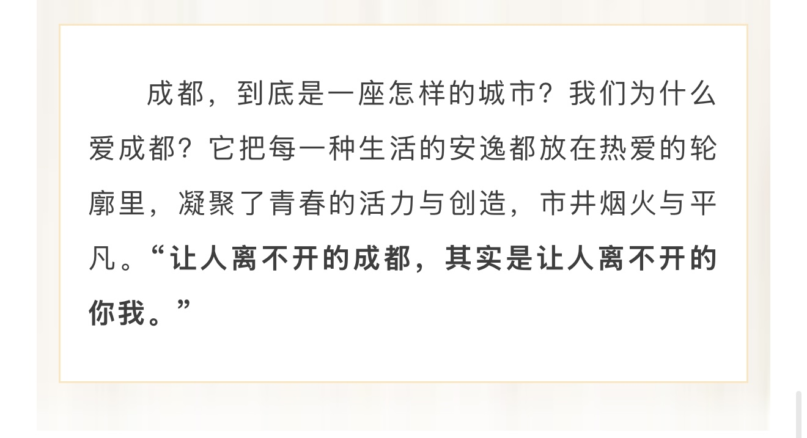

01 / PROFILEstories from campus融媒体中心
融媒体中心
策划 · 文案 · 出镜
武汉大学学生工作部融媒体中心
2024.09 — 2025.06

MEDIA
SELECTED STORIES · 02
稿件与人物让校园故事被看见。

02 / COLUMN武汉大学学生工作部融媒体中心
2024.09 — 2025.06

SELECTED STORIES · 02

01 / PROFILE
02 / COLUMN